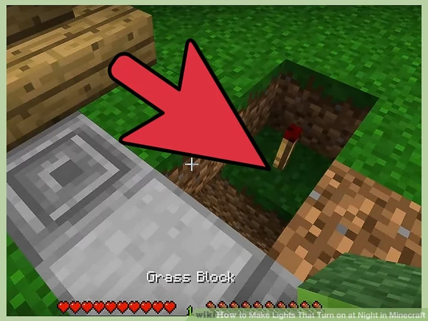

Lighting System
How to Make Lights That Turn on at Night in Minecraft
Daylight sensors have been around for a while, but the 1.8 Minecraft update made it easy to transform them into nightlights. This feature is also available on console editions of Minecraft, but not on Minecraft Pocket Edition or the Windows 10 beta edition.
Method 2: Example Daylight Sensor Designs
1: Create power lines from a single sensor.
You can power any number of redstone lamps from a single daylight sensor. Right-click to invert the sensor, then place a
line of redstone dust extending from any side of it. Place short branches of redstone off of this line, with a redstone lamp
at the end of each branch. When you reach the limit of the sensor's range (when the redstone is no longer glowing), place a
redstone repeater to keep the power line going.
Keep in mind the power signal will decrease as it brightens. If you have a
long line, the lamps farthest away from the sensor will go out first as dawn approaches.
2: Build street lamps.
Place three or four fence poles on top of each other to make one tall one, and top it with a redstone lamp. Place redstone dust on top of this lamp, then a daylight sensor on top of the redstone. Surround the redstone with more redstone lamps for extra light, then right-click the sensor to invert it.
3: Make lamps without redstone dust.
You can place a redstone lamp directly next to a night sensor to power it directly, with no need for redstone "wires." Bury the sensor two blocks deep in the floor, wall, or ceiling to make your lamps part of the room itself.
« Previous